Silver Screen Studios · Revision 04
Stage 1 CORRECTIONS & MATERIAL POLISH · FINAL VISUAL APPROVAL PENDING
Approved architecture preserved. Grounding, usable openings, lamp clearances, period hardware, canvas awnings, corner crowns, service routes and blackout mechanisms corrected at source.
47 actual Unity captures: standard concept comparisons, all seven service entrances, eight low perimeter angles and targeted construction/material details. The two labelled sun studies change only the review light direction and restore it afterward. No capture is retouched. Click for native resolution.
All 47 views Ground & perimeter Corrected details Exterior Interior Management & context exterior Front three-quarter APPROVED CONCEPT · DETAIL REFERENCE / APPROXIMATE VIEW 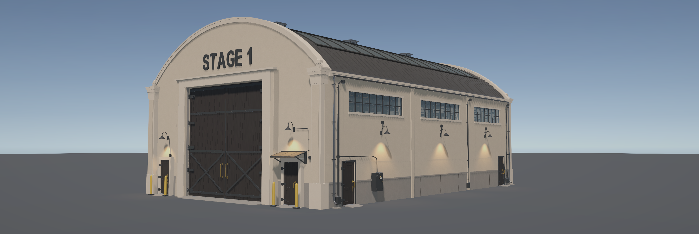
UNITY · 3072 × 1030 · CLICK FOR NATIVE SIZE Built portal, rolled door hardware, stepped pilasters and continuous roof seams.
APPROVED CONCEPT · DETAIL REFERENCE / APPROXIMATE VIEW 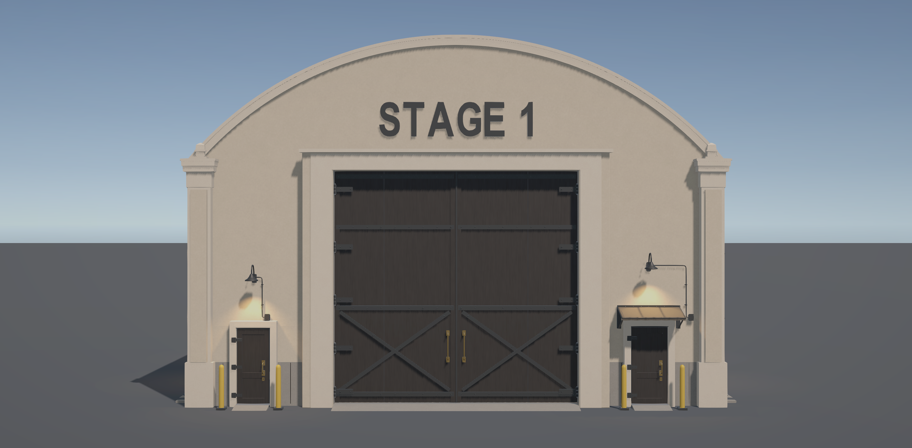
UNITY · 2910 × 1434 · CLICK FOR NATIVE SIZE Established arch and portal proportions retained; separate timber boards, straps, hinges and pulls.
APPROVED CONCEPT · DETAIL REFERENCE / APPROXIMATE VIEW 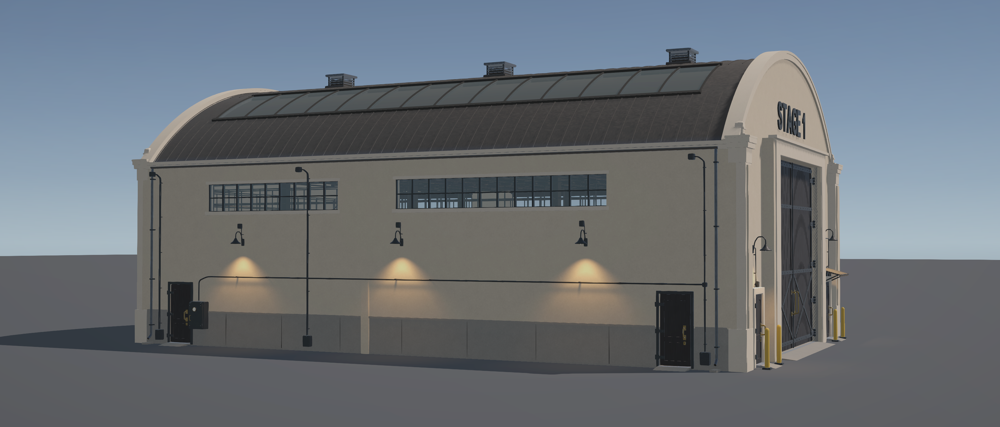
UNITY · 3354 × 1434 · CLICK FOR NATIVE SIZE Two long clerestories, recessed steel glazing frames, expressed base, eaves and connected services.
APPROVED CONCEPT · DETAIL REFERENCE / APPROXIMATE VIEW 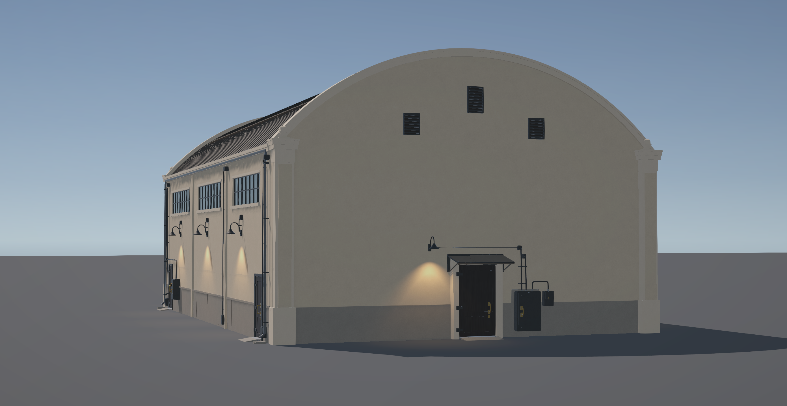
UNITY · 2784 × 1434 · CLICK FOR NATIVE SIZE Approved rear composition retained; canvas awning, corrected service connections and corner crowns.
APPROVED CONCEPT · DETAIL REFERENCE / APPROXIMATE VIEW 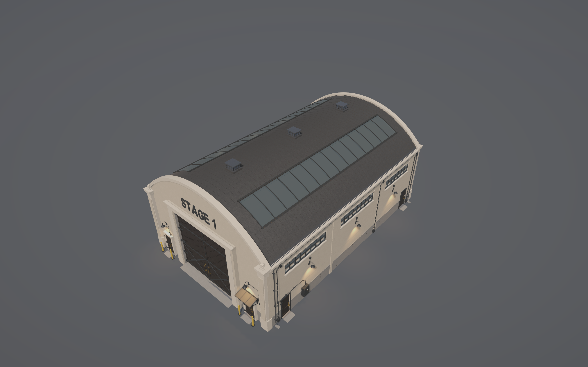
UNITY · 3200 × 2000 · CLICK FOR NATIVE SIZE Roof geometry retained; open gutters, formed drip edges and physically responding exposed metal.
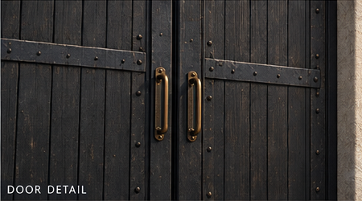
APPROVED CONCEPT · DETAIL REFERENCE / APPROXIMATE VIEW 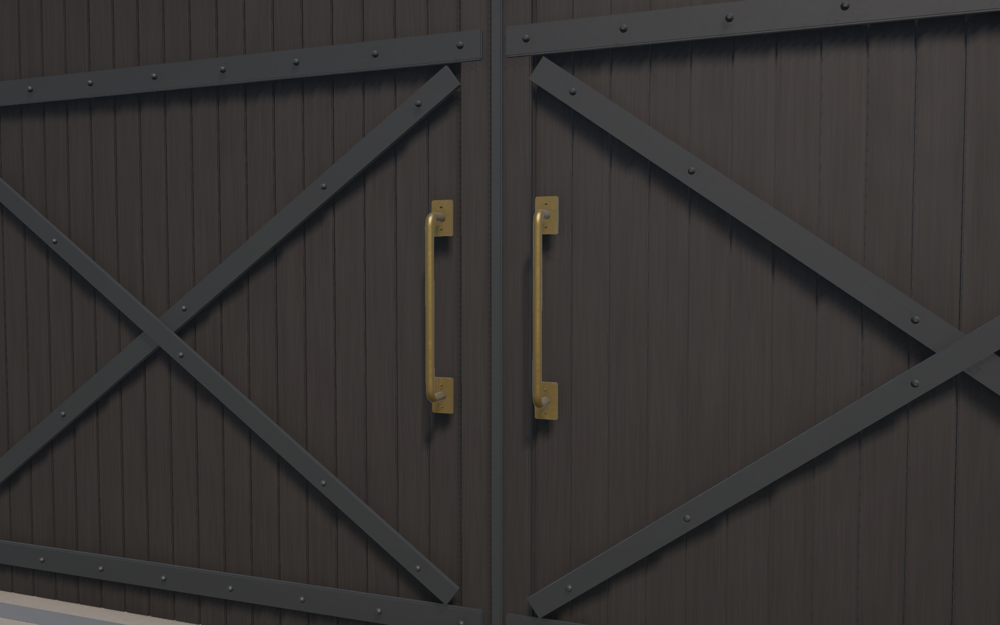
UNITY · 3200 × 2000 · CLICK FOR NATIVE SIZE Dimensional timber boards, crossed steel straps, rivets, meeting strip and formed brass pulls.
exterior Personnel entrance APPROVED CONCEPT · DETAIL REFERENCE / APPROXIMATE VIEW 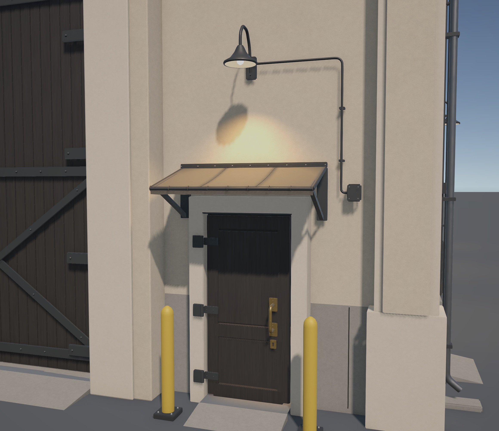
UNITY · 2320 × 2000 · CLICK FOR NATIVE SIZE Heavy canvas over anchored steel framing; curved pull, mortise lock, corrected threshold and seated bollards.
exterior Clerestory construction APPROVED CONCEPT · DETAIL REFERENCE / APPROXIMATE VIEW 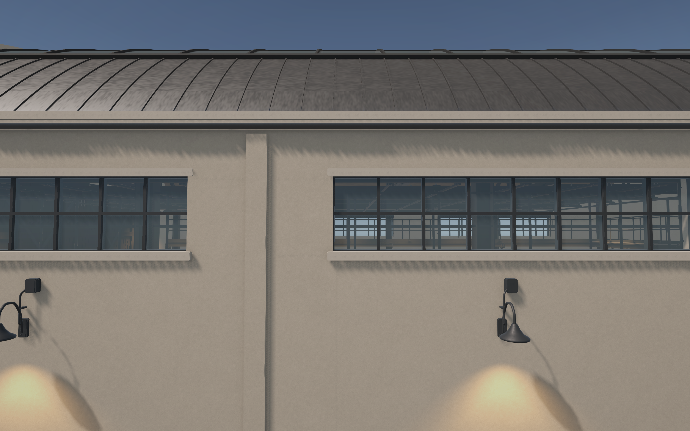
UNITY · 3200 × 2000 · CLICK FOR NATIVE SIZE Separate glazing seated behind T-section mullions and transoms; sill, header and interior blackout roller.
exterior Roof construction APPROVED CONCEPT · DETAIL REFERENCE / APPROXIMATE VIEW 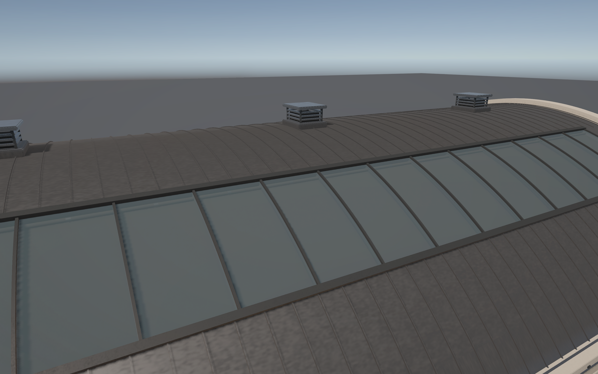
UNITY · 3200 × 2000 · CLICK FOR NATIVE SIZE Framed glass remains transparent above sealed roof blackout fabric; roof materials sample the exterior environment.
exterior Door pulls · close inspection APPROVED CONCEPT · DETAIL REFERENCE / APPROXIMATE VIEW 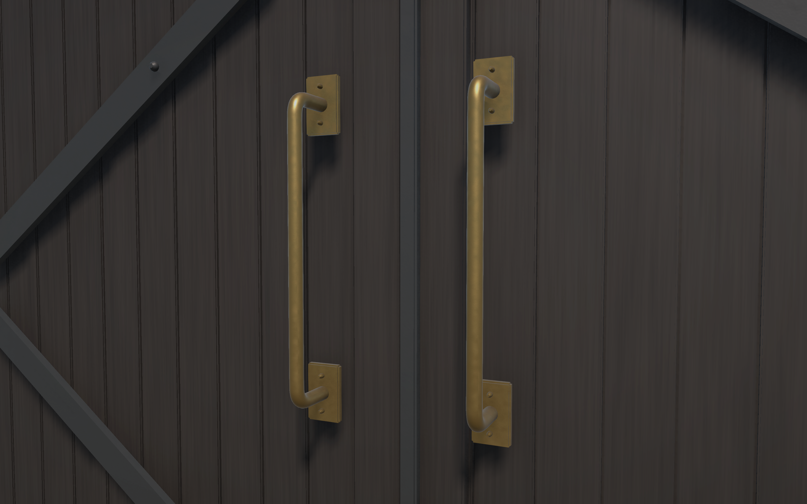
UNITY · 3200 × 2000 · CLICK FOR NATIVE SIZE Curved pulls, screw-fixed plates, timber joints and riveted reinforcement.
exterior Side service construction APPROVED CONCEPT · DETAIL REFERENCE / APPROXIMATE VIEW 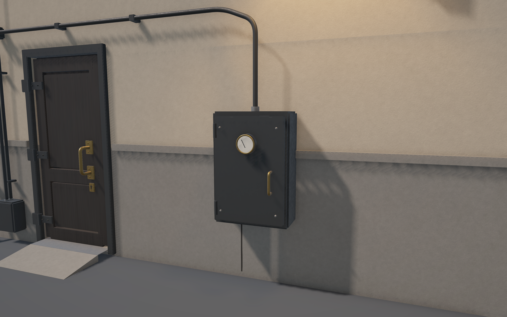
UNITY · 3200 × 2000 · CLICK FOR NATIVE SIZE Meter cabinet retained; supply remains above all door heads and gains intermediate supports.
exterior Rear service construction APPROVED CONCEPT · DETAIL REFERENCE / APPROXIMATE VIEW 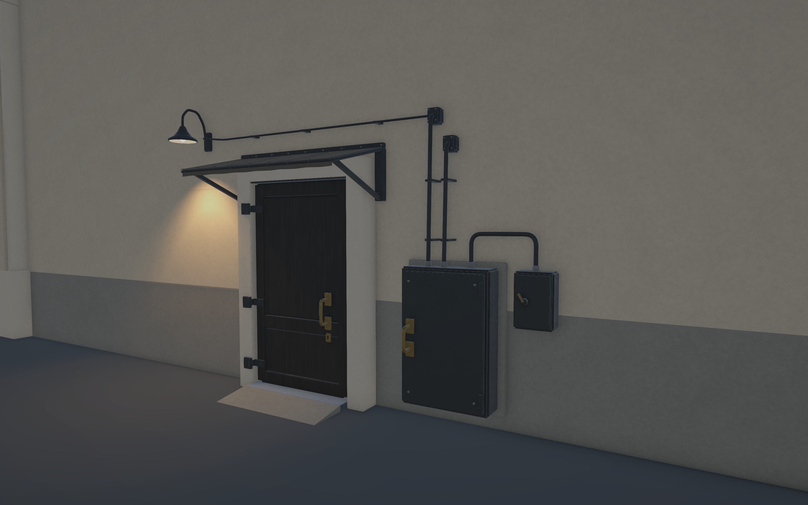
UNITY · 3200 × 2000 · CLICK FOR NATIVE SIZE Intake and disconnect retained; outward-facing junction covers, connected lamp circuit and canvas rain protection.
interior Interior · looking inward Five bowstring trusses, dedicated rigging, side/rear catwalks, permanent worklights and a clear filming floor.
interior Interior · toward stage doors APPROVED CONCEPT · DETAIL REFERENCE / APPROXIMATE VIEW 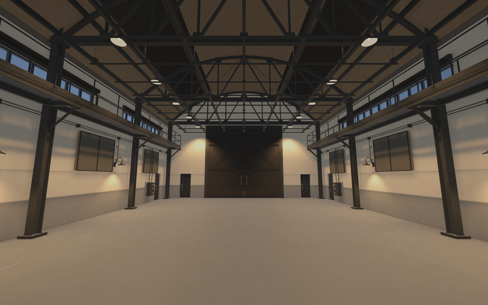
UNITY · 3200 × 2000 · CLICK FOR NATIVE SIZE Reverse view from ahead of the rear stair. Heavy door construction and service edges remain legible.
interior Roof trusses and rigging APPROVED CONCEPT · DETAIL REFERENCE / APPROXIMATE VIEW 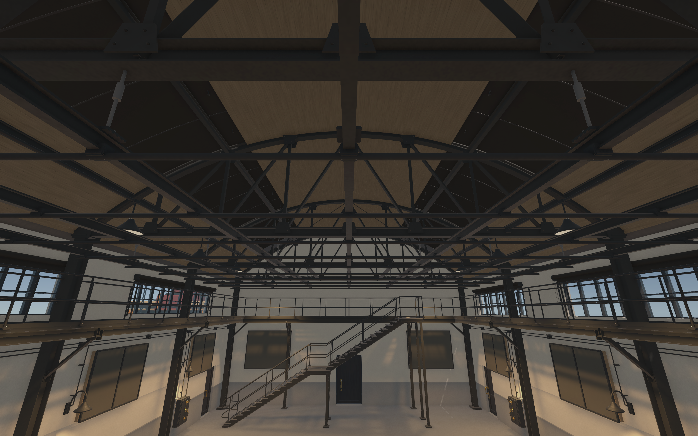
UNITY · 3200 × 2000 · CLICK FOR NATIVE SIZE Rolled chords, paired angle webs, riveted gussets, purlins, seven grid rows and fourteen cross battens.
interior Stair and catwalk APPROVED CONCEPT · DETAIL REFERENCE / APPROXIMATE VIEW 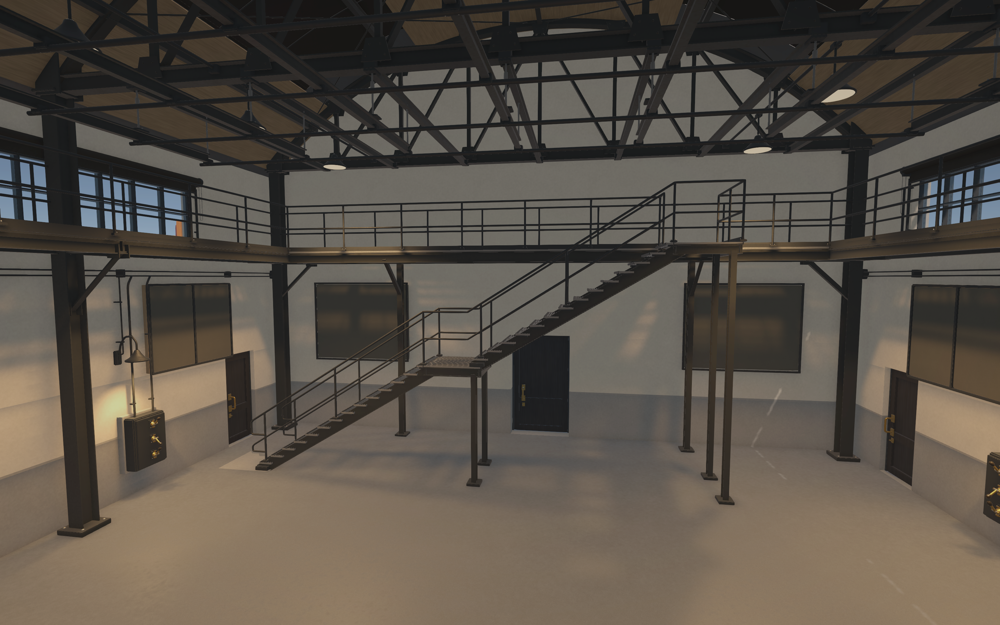
UNITY · 3200 × 2000 · CLICK FOR NATIVE SIZE Open grating, individual treads, rolled stringers, supported landings, continuous rails and closed lower returns.
interior Stage doors from inside Inner rails and crossed straps, substantial stiles, pulls, drop bolts, threshold and steel portal liners.
interior Structure cutaway APPROVED CONCEPT · DETAIL REFERENCE / APPROXIMATE VIEW 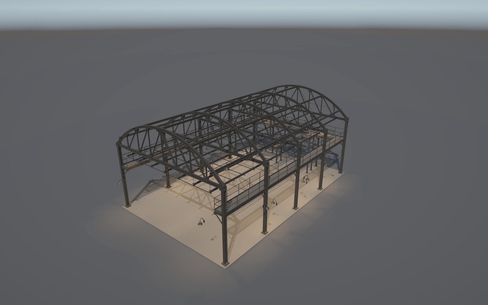
UNITY · 3200 × 2000 · CLICK FOR NATIVE SIZE Enclosure hidden for inspection. Lamps appear detached only where their supporting walls are hidden.
interior Rear circulation cutaway APPROVED CONCEPT · DETAIL REFERENCE / APPROXIMATE VIEW 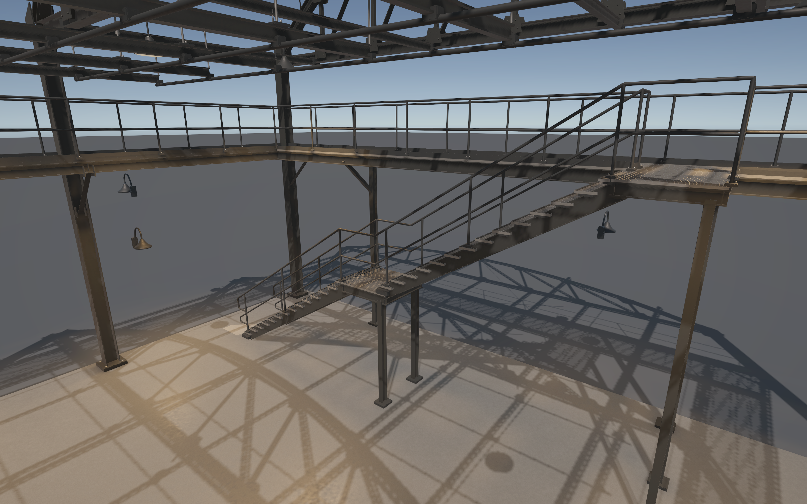
UNITY · 3200 × 2000 · CLICK FOR NATIVE SIZE Enclosure hidden. The top landing turns into the rear crosswalk; rigging ends ahead of the stair headroom zone.
context Management camera · candidate framed APPROVED CONCEPT · DETAIL REFERENCE / APPROXIMATE VIEW 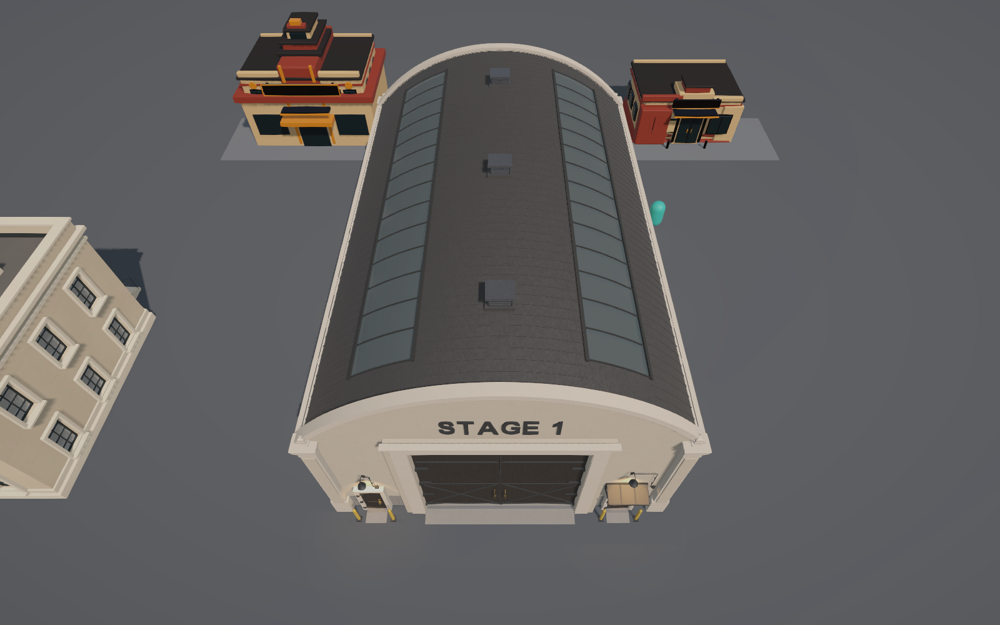
UNITY · 1600 × 1000 · CLICK FOR NATIVE SIZE Normal 1600 × 1000 output, existing 52° pitch and 60° FOV, panned over the isolated candidate location.
context Management camera · saved pose APPROVED CONCEPT · DETAIL REFERENCE / APPROXIMATE VIEW 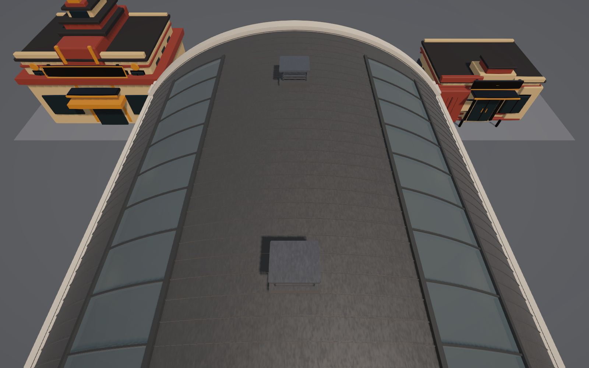
UNITY · 1600 × 1000 · CLICK FOR NATIVE SIZE Exact saved Main Camera pose. Its framing lands on the roof at this separate review location; production camera/layout integration is untouched.
context Administration context APPROVED CONCEPT · DETAIL REFERENCE / APPROXIMATE VIEW 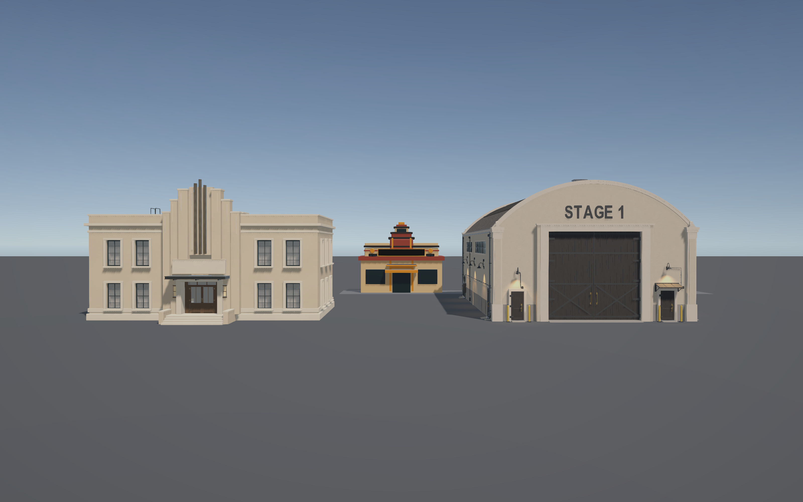
UNITY · 3200 × 2000 · CLICK FOR NATIVE SIZE Actual unchanged Administration and existing review positions. Context and scale only; the supplied scene composition is not recreated.
ground Front perimeter at grade APPROVED CONCEPT · DETAIL REFERENCE / APPROXIMATE VIEW 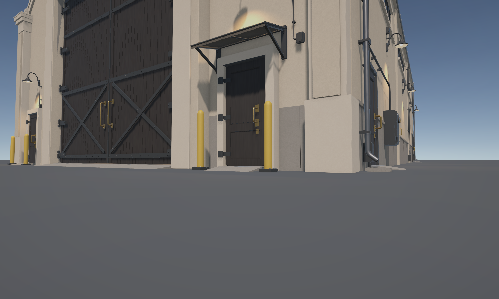
UNITY · 3000 × 1800 · CLICK FOR NATIVE SIZE Main and personnel thresholds transition to grade; bollard and pilaster bases contact the same datum.
ground Rear perimeter at grade APPROVED CONCEPT · DETAIL REFERENCE / APPROXIMATE VIEW 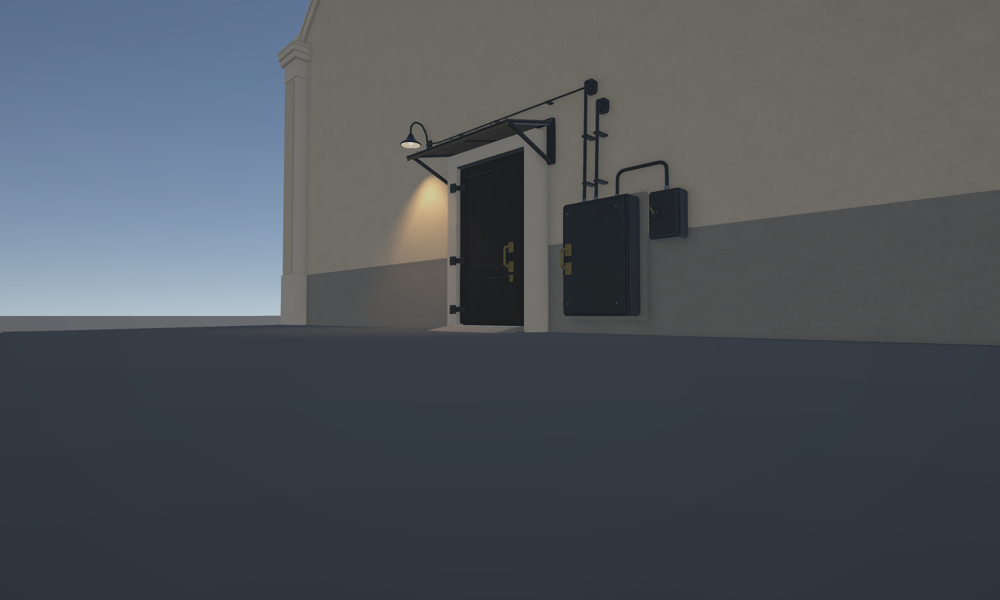
UNITY · 3000 × 1800 · CLICK FOR NATIVE SIZE Continuous rear wall/foundation contact, service threshold and wall-mounted cabinets.
APPROVED CONCEPT · DETAIL REFERENCE / APPROXIMATE VIEW 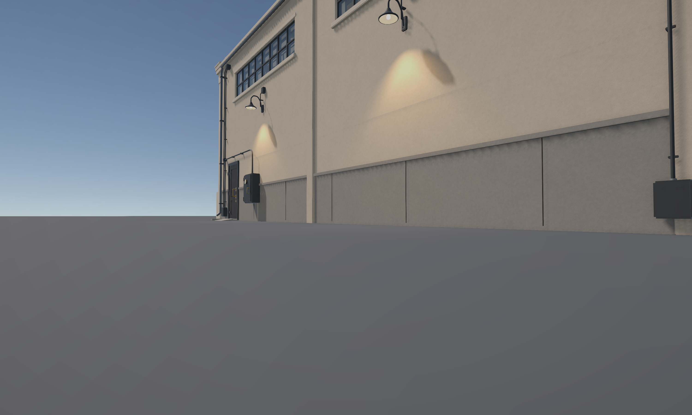
UNITY · 3000 × 1800 · CLICK FOR NATIVE SIZE Low view along the side-wall base and permanent services.
ground Opposite side at grade APPROVED CONCEPT · DETAIL REFERENCE / APPROXIMATE VIEW 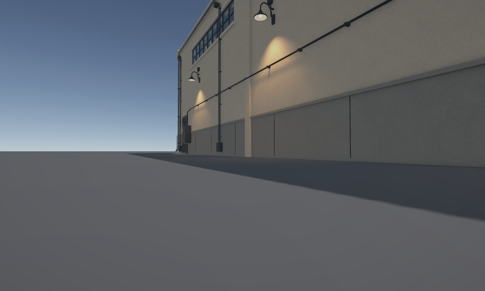
UNITY · 3000 × 1800 · CLICK FOR NATIVE SIZE Ground contact along the opposite wall and service openings.
detail Personnel entrance · frontal APPROVED CONCEPT · DETAIL REFERENCE / APPROXIMATE VIEW 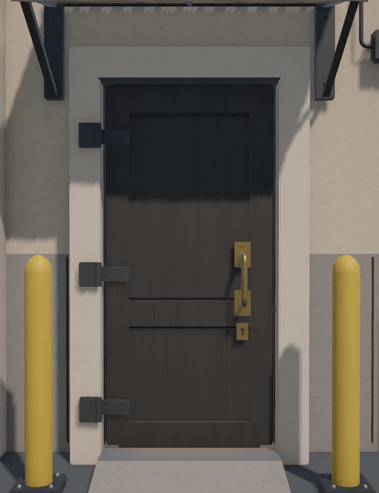
UNITY · 2000 × 2600 · CLICK FOR NATIVE SIZE Clear opening, seated threshold, working hinge clearance and separate keyhole escutcheon.
detail Side doorway · low oblique APPROVED CONCEPT · DETAIL REFERENCE / APPROXIMATE VIEW 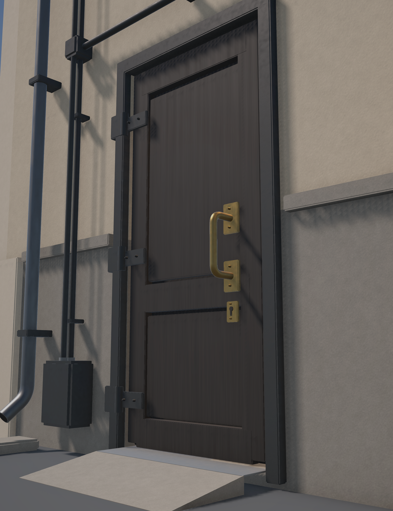
UNITY · 2000 × 2600 · CLICK FOR NATIVE SIZE The thin MasonryFraming remnant is removed by a complete three-dimensional opening exclusion.
detail Lamp and column relationship APPROVED CONCEPT · DETAIL REFERENCE / APPROXIMATE VIEW 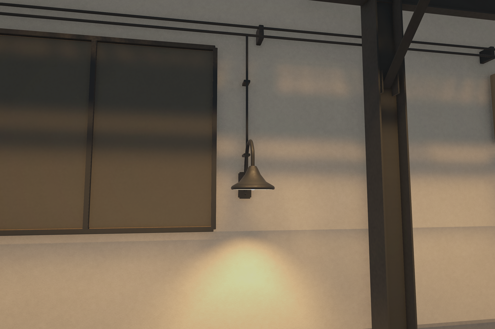
UNITY · 3000 × 2000 · CLICK FOR NATIVE SIZE Wall fixture and branch moved together into a clear wall bay; dedicated source intersection checks cover every wall lamp.
detail Industrial switch mechanisms APPROVED CONCEPT · DETAIL REFERENCE / APPROXIMATE VIEW 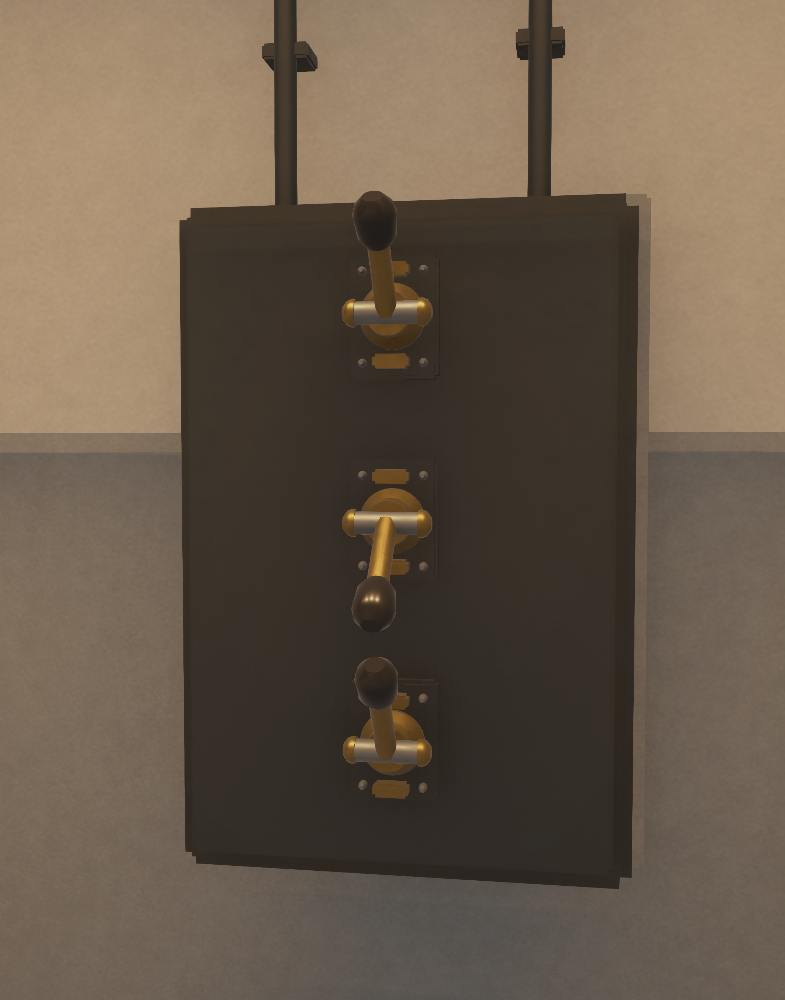
UNITY · 2200 × 2800 · CLICK FOR NATIVE SIZE Bolted plates, bronze bearing bosses, pivot pins, forged levers, shaped grips and positive stops. Grips are separated.
detail Pull and mortise lock APPROVED CONCEPT · DETAIL REFERENCE / APPROXIMATE VIEW 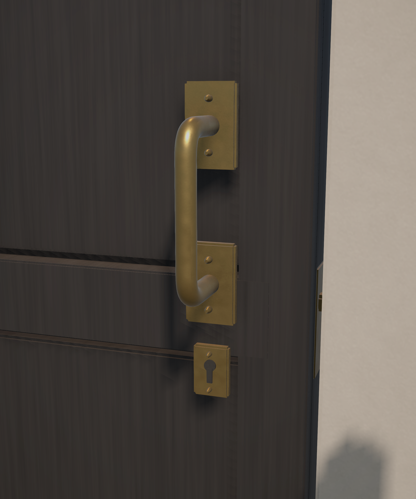
UNITY · 2000 × 2400 · CLICK FOR NATIVE SIZE Successful curved pull retained; the unexplained block becomes a screw-fixed keyhole escutcheon, edge lock plate, bolt and frame strike.
detail Canvas awning construction APPROVED CONCEPT · DETAIL REFERENCE / APPROXIMATE VIEW 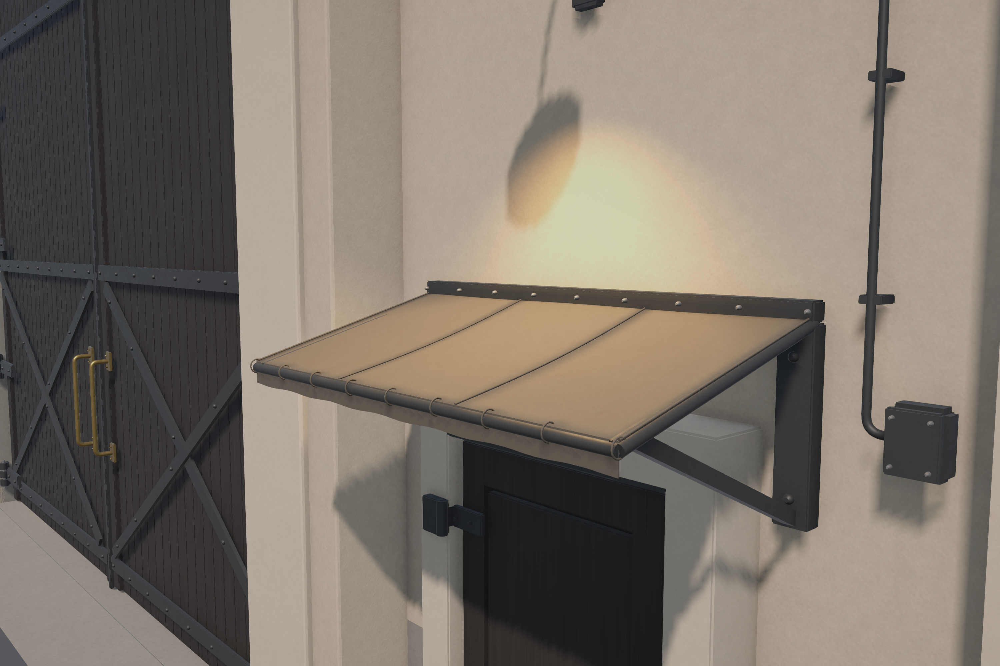
UNITY · 3000 × 2000 · CLICK FOR NATIVE SIZE Heavy taupe canvas with subtle drape, seams, thickness, edge lacing and short valance on steel ribs and anchored brackets.
detail Corner pilaster crown APPROVED CONCEPT · DETAIL REFERENCE / APPROXIMATE VIEW 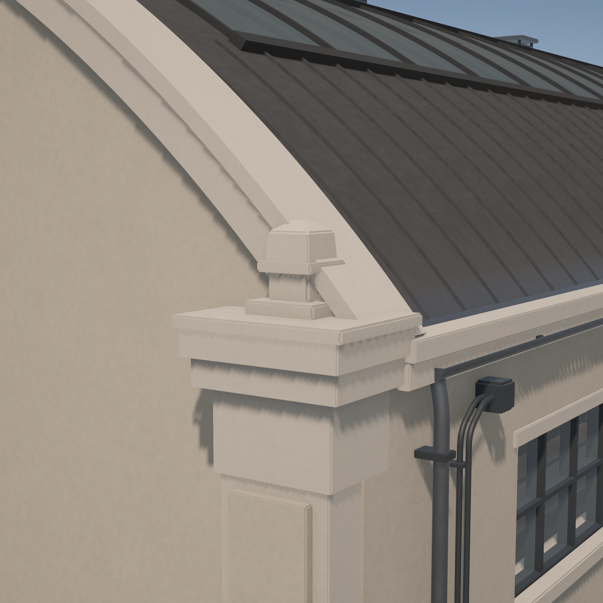
UNITY · 2400 × 2400 · CLICK FOR NATIVE SIZE Four stepped corner crowns with squat necks, projecting collars and small hipped peaks, following the concept.
detail Roof · grazing view APPROVED CONCEPT · DETAIL REFERENCE / APPROXIMATE VIEW 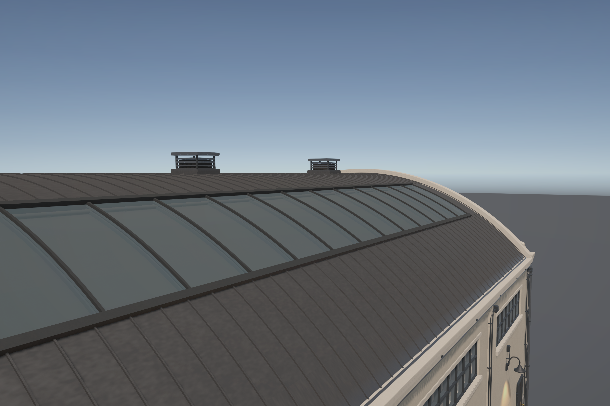
UNITY · 3000 × 2000 · CLICK FOR NATIVE SIZE Exposed metal, seams and glazing under the unchanged studio sun.
detail Roof blackout and structure APPROVED CONCEPT · DETAIL REFERENCE / APPROXIMATE VIEW 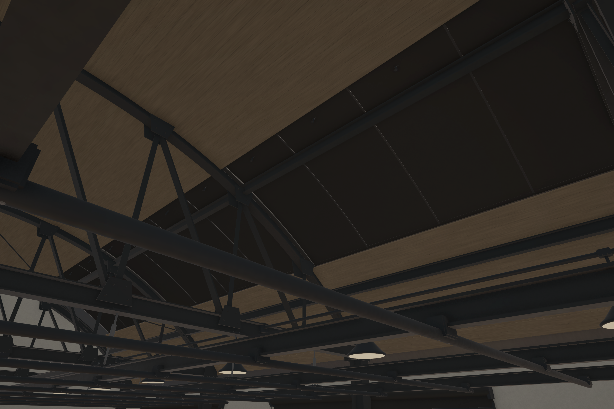
UNITY · 3000 × 2000 · CLICK FOR NATIVE SIZE Closed roller fabric sits above the primary steel. Surrounding timber lining is preserved and stops at glazing.
detail Clerestory roller and catwalk APPROVED CONCEPT · DETAIL REFERENCE / APPROXIMATE VIEW 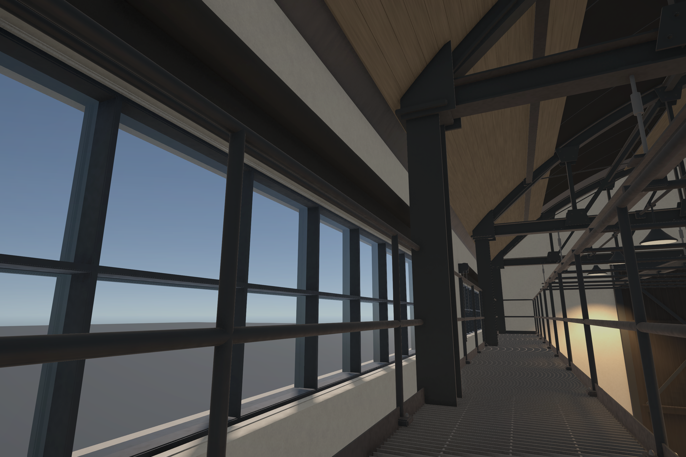
UNITY · 3000 × 2000 · CLICK FOR NATIVE SIZE Stowed roller, aligned hem and guides, wall saddles and an operating chain accessible from the catwalk.
detail Roof · direct sunlight APPROVED CONCEPT · DETAIL REFERENCE / APPROXIMATE VIEW 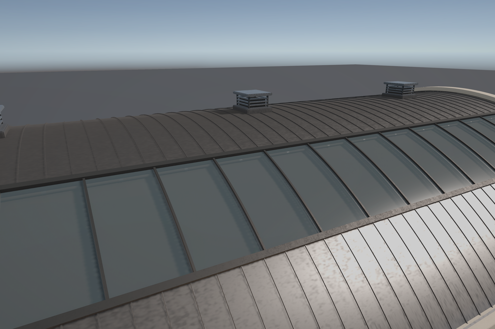
UNITY · 3000 × 2000 · CLICK FOR NATIVE SIZE Temporary review-only sun direction exposes the foreground roof highlight; material and lighting response produce the highlight.
detail Roof · shaded foreground APPROVED CONCEPT · DETAIL REFERENCE / APPROXIMATE VIEW 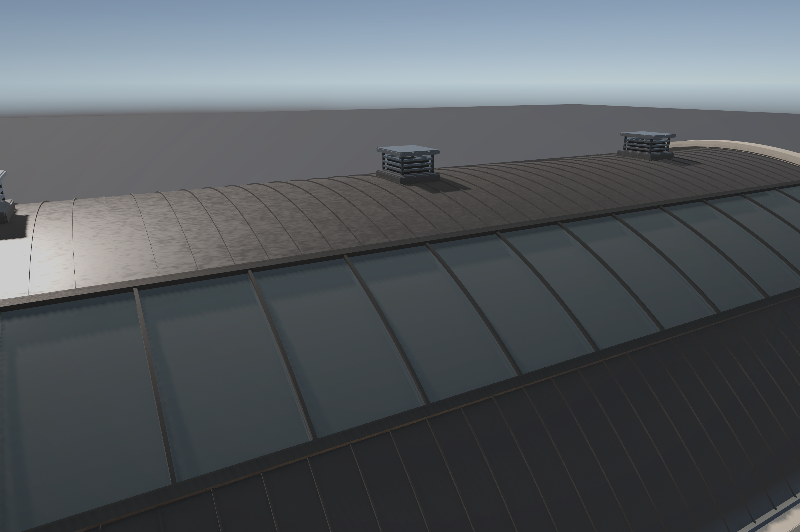
UNITY · 3000 × 2000 · CLICK FOR NATIVE SIZE Same camera/material, opposite review sun direction. Foreground metal is shaded while the opposite crown remains lit.
ground Front-left perimeter at grade APPROVED CONCEPT · DETAIL REFERENCE / APPROXIMATE VIEW 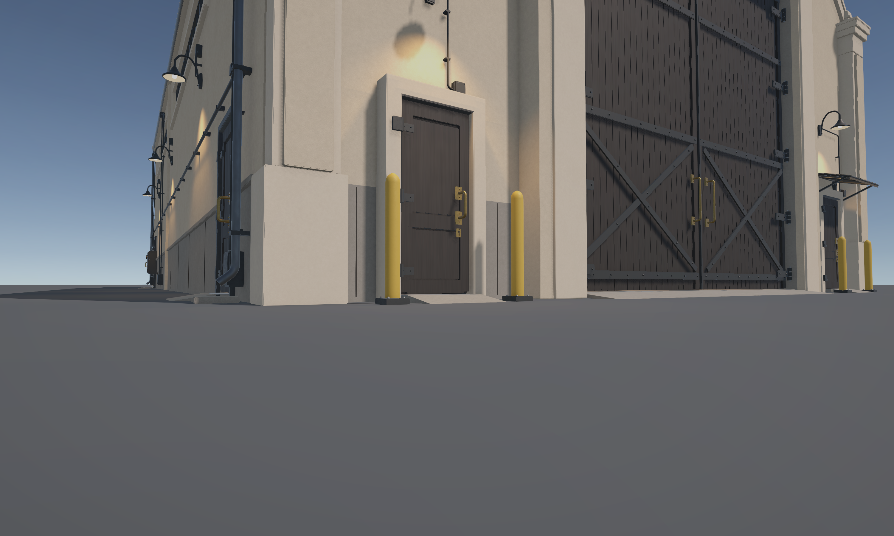
UNITY · 3000 × 1800 · CLICK FOR NATIVE SIZE Second low front angle covers the left portal and personnel entrance.
detail Front-left personnel opening APPROVED CONCEPT · DETAIL REFERENCE / APPROXIMATE VIEW 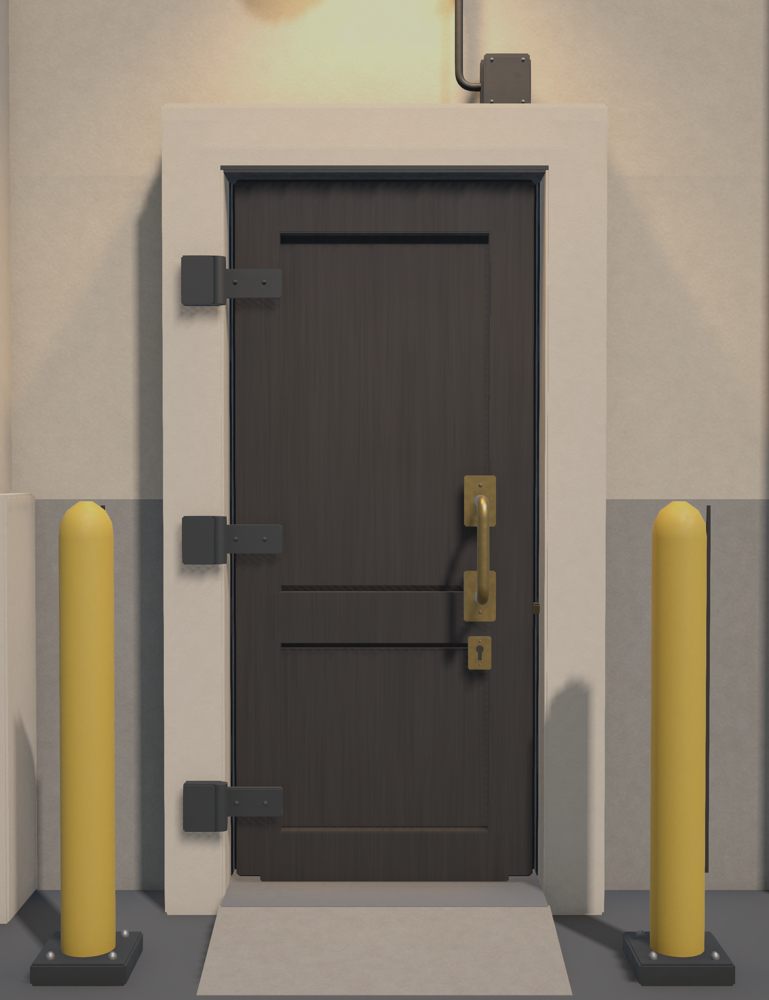
UNITY · 2000 × 2600 · CLICK FOR NATIVE SIZE The smaller entrance has the same corrected lock/hinge/threshold module; no new canopy was added.
detail Hero-side rear service opening APPROVED CONCEPT · DETAIL REFERENCE / APPROXIMATE VIEW 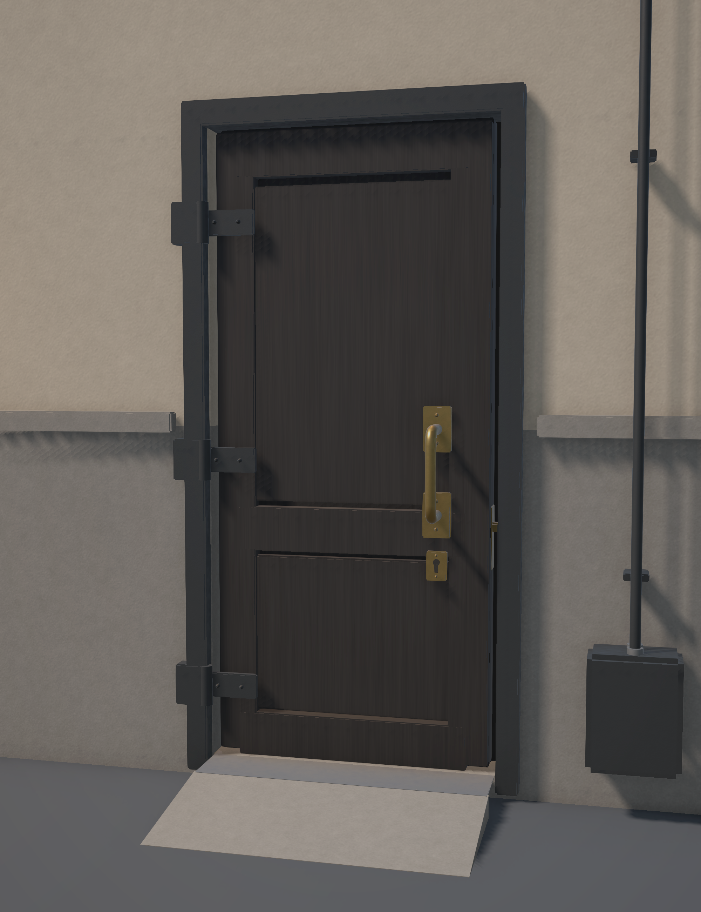
UNITY · 2000 × 2600 · CLICK FOR NATIVE SIZE Full opening and service clearances at the rear of the hero-facing wall.
detail Opposite-side front opening APPROVED CONCEPT · DETAIL REFERENCE / APPROXIMATE VIEW 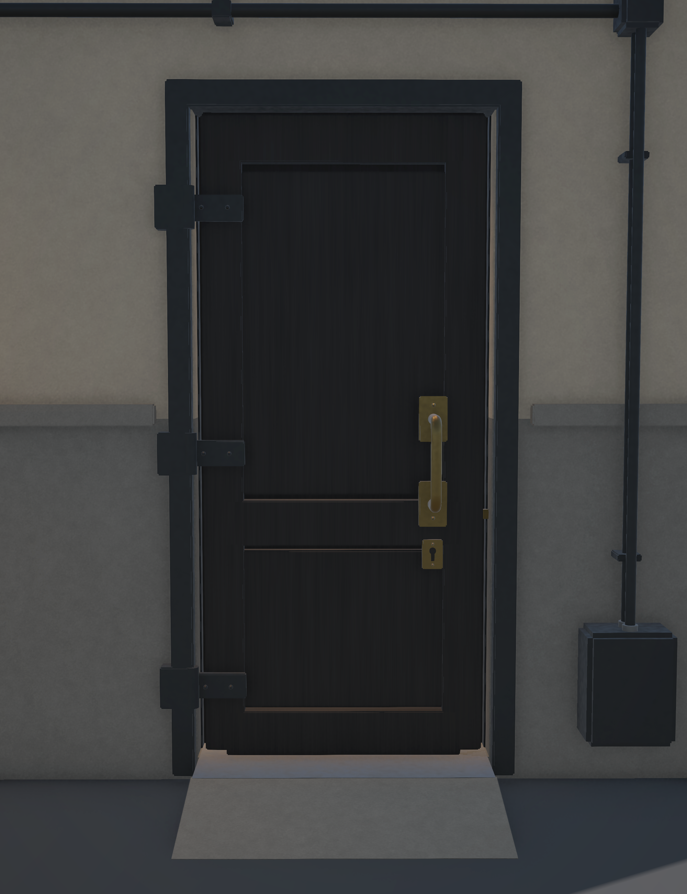
UNITY · 2000 × 2600 · CLICK FOR NATIVE SIZE Full opening, graded threshold and surrounding service routes.
detail Opposite-side rear opening APPROVED CONCEPT · DETAIL REFERENCE / APPROXIMATE VIEW 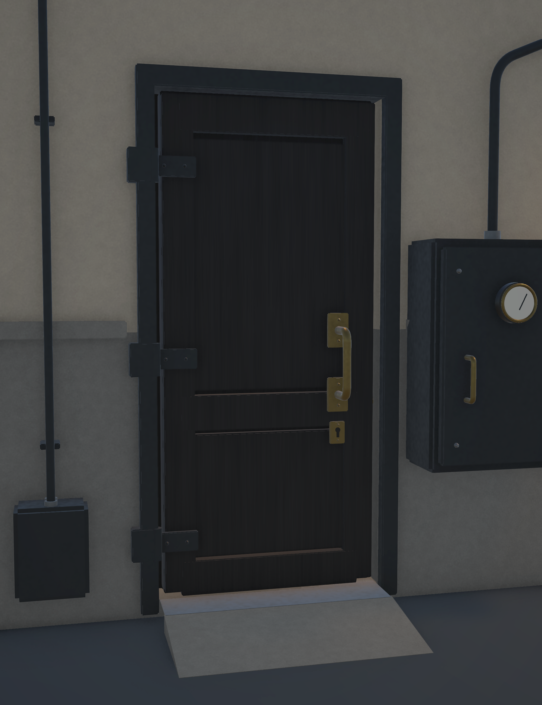
UNITY · 2000 × 2600 · CLICK FOR NATIVE SIZE The adjacent cabinet and conduit remain clear of the doorway and outward door sweep.
detail Rear service opening · frontal APPROVED CONCEPT · DETAIL REFERENCE / APPROXIMATE VIEW 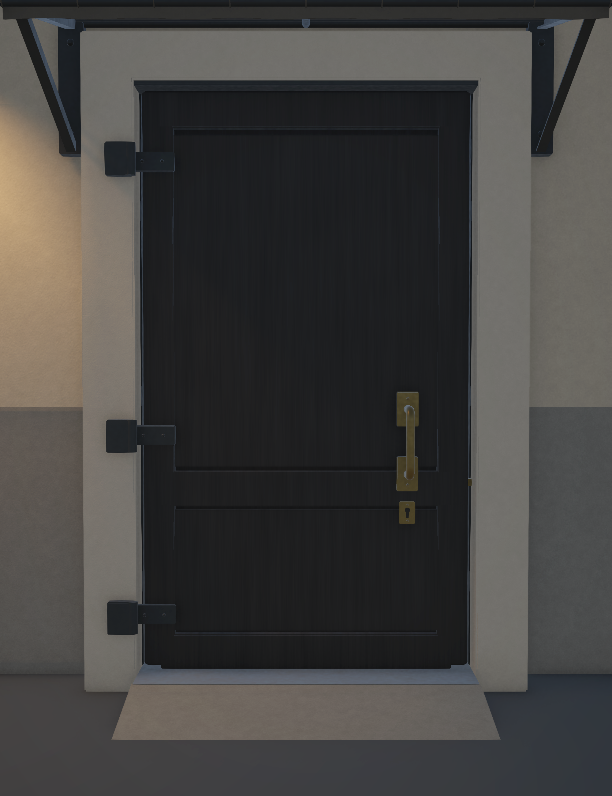
UNITY · 2000 × 2600 · CLICK FOR NATIVE SIZE Rear opening, canvas shelter, mortise lock and seated threshold.
ground Rear-right perimeter at grade APPROVED CONCEPT · DETAIL REFERENCE / APPROXIMATE VIEW 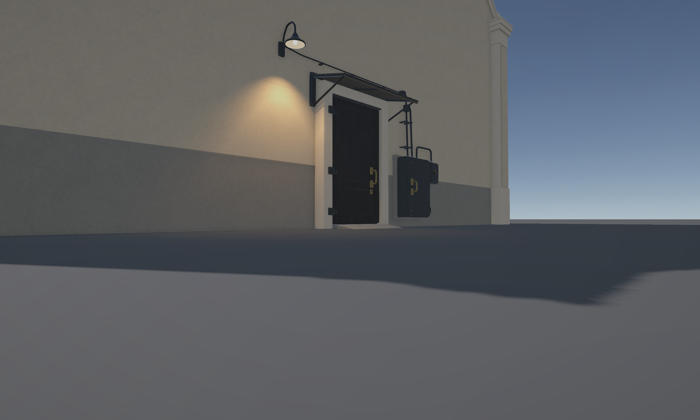
UNITY · 3000 × 1800 · CLICK FOR NATIVE SIZE Complementary low rear angle checks both end piers and the service threshold.
ground Hero-side ground · reverse APPROVED CONCEPT · DETAIL REFERENCE / APPROXIMATE VIEW 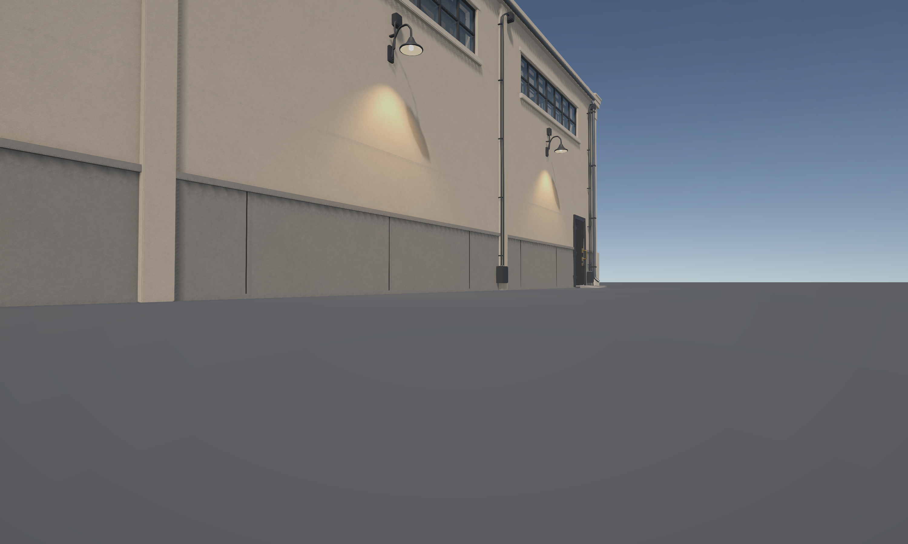
UNITY · 3000 × 1800 · CLICK FOR NATIVE SIZE Reverse direction covers the rest of the side-wall base and rear service door.
ground Opposite ground · reverse APPROVED CONCEPT · DETAIL REFERENCE / APPROXIMATE VIEW 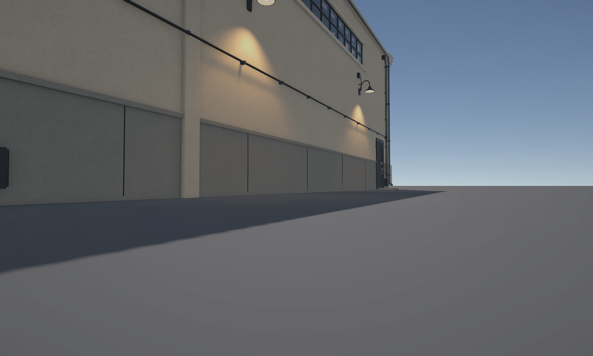
UNITY · 3000 × 1800 · CLICK FOR NATIVE SIZE Complementary direction covers the full opposite perimeter.
Stopped for final visual approval. Original Stage and Administration preserved. No LODs, prop extraction, optimization, commit or push. The live candidate is seated at ground; Studio remains unsaved.